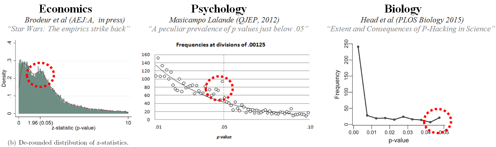

43 Limiti dell’inferenza frequentista
In questa parte della dispensa abbiamo esaminato il metodo “tradizionale” per il test di significatività dell’ipotesi nulla (NHST). Capire la logica alla base dell’approccio NHST è necessario poiché è stato l’approccio dominante alla statistica inferenziale sin da quando il metodo NHST è stato proposto all’inizio del XX secolo. È su tale procedura che la maggioranza dei ricercatori fa ancora affidamento per l’analisi dei dati. Quindi è necessario conoscere tale procedura inferenziale anche se, in tempi recenti, essa è stata aspramente criticata. Il fatto è che molti ricercatori hanno iniziato a pensare che l’approccio NHST crea più problemi di quanti ne risolva. Esaminiamo qui sotto alcuni dei dubbi che sono sorti nella comunità scientifica a proposito dell’approccio NHST.
43.1 L’uso del valore-\(p\) nel mondo della ricerca
Nuzzo (2014) descrive i limiti dell’approccio NHST nella pratica scientifica. Nuzzo (2014) ci ricorda che Ronald Fisher ha introdotto il valore-\(p\) negli anni ’20, ma non ha mai pensato ad esso come ad un test formale. Per Fisher, il valore-\(p\) era uno strumento per giudicare informalmente se l’evidenza empirica fosse significativa, laddove il termine significativo veniva inteso in un senso colloquiale, ovvero come qualcosa che meritava di essere considerata con attenzione. Secondo Fisher, lo sperimentatore propone un’ipotesi nulla che spera di dimostrare falsa (per esempio, l’assenza di differenza tra due gruppi). Poi gioca a fare l’avvocato del diavolo e assume che l’ipotesi nulla sia vera. Questo gli consente di calcolare la probabilità di osservare un risultato altrettanto estremo o più estremo di quello trovato, se il risultato trovato è interamente dovuto alla sola variabilità campionaria. Anche se il metodo frequentista dell’apagogia che abbiamo presentato in precedenza consente di calcolare il valore-\(p\) mediante una procedura matematica, per Fisher tale valore è solo uno strumento da usare all’interno di un processo non numerico capace di combinare le evidenze empiriche correnti con le conoscenze precedenti del ricercatore: è uno strumento da usare all’interno del processo decisionale, non la conclusione del processo decisionale stesso.
Le procedure di decisione statistica vennero formalizzate alla fine degli anni ’20 da due rivali di Fisher, il matematico Jerzy Neyman e lo statistico Egon Pearson, i quali si posero lo scopo di rendere il processo di decisione “rigoroso e obiettivo”. A tal fine, Neyman e Pearson introdussero, tra l’altro, i concetti di potere statistico e di falso positivo (concetti che abbiamo descritto nei paragrafi precedenti). Non usarono invece la nozione di valore-\(p\).
Questi due approcci contrapposti portarono ad un dibattito molto acceso tra di due gruppi. Neyman descrisse il lavoro di Fisher come matematicamente “worse than useless”. Fisher chiamò l’approccio di Neyman “childish” e “horrifying [for] intellectual freedom in the west”.
Mentre questo dibattito si sviluppava, altri autori iniziarono a scrivere dei manuali di statistica allo scopo di fornire uno strumento di lavoro ai ricercatori. Dato che molti di questi autori non erano statistici, ma avevano solo una comprensione superficiale della distinzione tra l’approccio di Fisher, da una parte, e l’approccio di Neyman e Pearson, dall’altra, finirono per creare un sistema ibrido che utilizzava il valore-\(p\) proposto da Fisher (che era un numero facile da calcolare) all’interno del “sistema rigoroso” proposto da Neyman e Pearson. È in questo contesto che la soglia di un valore-\(p\) pari a 0.05 venne definita “statisticamente significativa”. Dal punto di vista storico si può dunque dire che il valore-\(p\) proposto da Fisher ha un significato ben diverso dal significato che viene attribuito al valore-\(p\) al giorno d’oggi nel mondo della ricerca. Come abbiamo visto sopra, il valore-\(p\), con il significato che gli attribuiamo oggi, è frutto di un “incidente storico” privo di qualunque giustificazione e fondamento.
Nel 2016 l’American Statistical Association ha pubblicato un articolo di Wasserstein & Lazar (2016) nel quale si esprime una grande preoccupazione per l’uso inappropriato che viene fatto del valore-\(p\) nella pratica scientifica odierna:
\(P\)-values do not measure the probability that the studied hypothesis is true, or the probability that the data were produced by random chance alone. Researchers often wish to turn a \(p\)-value into a statement about the truth of a null hypothesis, or about the probability that random chance produced the observed data. The \(p\)-value is neither. It is a statement about data in relation to a specified hypothetical explanation, and is not a statement about the explanation itself.
L’articolo prosegue affermando che:
Scientific conclusions and business or policy decisions should not be based only on whether a \(p\)-value passes a specific threshold. Practices that reduce data analysis or scientific inference to mechanical “bright-line” rules (such as “\(p < 0.05\)”) for justifying scientific claims or conclusions can lead to erroneous beliefs and poor decision making. A conclusion does not immediately become ‘true’ on one side of the divide and ‘false’ on the other. Researchers should bring many contextual factors into play to derive scientific inferences, including the design of a study, the quality of the measurements, the external evidence for the phenomenon under study, and the validity of assumptions that underlie the data analysis. Pragmatic considerations often require binary, ‘yes-no’ decisions, but this does not mean that \(p\)-values alone can ensure that a decision is correct or incorrect. The widespread use of “statistical significance” (generally interpreted as ) as a license for making a claim of a scientific finding (or implied truth) leads to considerable distortion of the scientific process.
43.2 \(P\)-hacking
La fallacia maggiore associata all’uso del valore-\(p\) è chiamata “\(P\)-hacking” (o anche data-dredging, snooping, fishing, significance-chasing, double-dipping). Secondo Uri Simonsohn della Università della Pennsylvania, \(P\)-hacking is trying multiple things until you get the desired result. Esempi di \(P\)-hacking sono: That finding seems to have been obtained through \(p\)-hacking, the authors dropped one of the conditions so that the overall \(p\)-value would be less than .05, oppure She is a \(p\)-hacker, she always monitors data while it is being collected.
La pratica del \(P\)-hacking ha l’effetto di trasformare uno studio esplorativo (che dovrebbe essere sempre considerato con cautela) in uno studio (apparentemente) confermativo, con la conseguenza di proporre al lettore risultati solo in apparenza “robusti” ma che, in realtà, hanno una probabilità pressoché nulla di essere replicati in studi successivi. Le simulazioni di Simonsohn hanno mostrato come il cambiamento di poche decisioni all’interno del processo di analisi dei dati possa aumentare fino al 60% il tasso di falsi positivi in un singolo studio.
La pratica del \(P\)-hacking emerge soprattutto negli studi che si pongono il problema di dimostrare piccoli effetti usando dati molto rumorosi. In un’analisi della letteratura psicologica, Simonsohn ha trovato che i valori-\(p\) riportati dagli psicologi tendono a concentrarsi su valori appena superiori alla soglia “minima” dello 0.05 (Figura 43.1). Questo risultato può essere interpretato come conseguenza della pratica del \(P\)-hacking: infatti, i ricercatori possono eseguire molteplici test statistici fino a trovarne uno che risulta “statisticamente significativo” e poi riportano solo quello. Come mostra la Figura 43.1, questa pratica non riguarda solo la psicologia ma è diffusa in tutti i campi della ricerca scientifica.

43.3 Critiche al valore-\(p\)
Il valore-\(p\) è stato paragonato alle zanzare (creature noiose e impossibili da mandare via), ai vestiti nuovi dell’imperatore (ovvero, il fatto per cui la maggioranza delle persone sceglie di non riconoscere i problemi che sono ovvi a tutti, ma preferisce fingere di non vederli), o ad un sterile intellectual rake che non produce nulla. È stato ironizzato che l’unica ragione di chiamare questa procedura statistical hypothesis inference testing è per l’acronimo che tale espressione produce.
Il fatto che valore-\(p\) incoraggia un modo di pensare sbagliato, in quanto sposta l’attenzione dal problema centrale della ricerca, ovvero il problema di stabilire qual è la forza della manipolazione sperimentale (ovvero, la dimensione dell’effetto), ad un problema irrilevante, ovvero quello di dimostrare falsa un’ipotesi fantoccio che sappiamo essere falsa a priori (l’ipotesi nulla). L’esempio che Nuzzo (2014) propone è quello di uno studio su più di 19,000 individui che ha mostrato come coloro che incontrano il loro partner online hanno una probabilità minore di divorziare (\(p <\) 0.002) e mostrano livelli maggiori di soddisfazione maritale (\(p <\) 0.001) rispetto alle coppie che non si sono conosciute online (si veda Nature ; 2013). Questo può sembrare un risultato interessante fino a quando non consideriamo la dimensione dell’effetto: per coloro che si sono conosciuti online il tasso di divorzi diminuisce dal 7.67% al 5.96%, mentre l’indice di soddisfazione maritale aumenta solo da 5.48 a 5.64 su una scala a sette passi. In generale, la domanda giusta da porsi non è “c’è un effetto oppure no?” ma bensì “quanto è grande l’effetto?”.
43.4 L’effetto sperimentale è esattamente nullo?
Una delle critiche più ovvie che sono state rivolte alla logica della verifica delle ipotesi statistiche riguarda il fatto che non è ragionevole supporre che l’effetto della manipolazione sperimentale sia “esattamente” nullo. Un esempio preso dalla fisica illustra questo punto. Borel (1914) ha dimostrato che lo spostamento di un centimetro di un grammo di massa in una stella a qualche anno luce da noi modifica il movimento delle molecole di un gas sulla terra. Se, come sembra, tutto è collegato con tutto, allora è ragionevole supporre che la manipolazione sperimentale, quale essa sia, un qualche effetto lo produca sempre. Come Andrew Gelman ha ripetuto molte volte, il punto non è dimostrare falsa l’affermazione secondo cui la manipolazione sperimentale produce un effetto esattamente nullo. Importante invece è stabilire se la dimensione dell’effetto sia sufficientemente grande da avere una qualche importanza dal punto di vista pratico, e stabilire se l’effetto sia riproducibile. Se questi sono gli obiettivi, allora la logica della verifica dell’ipotesi nulla si dimostra problematica. Infatti, come abbiamo visto sopra, nel caso di piccoli campioni e di piccoli effetti (caso, questo, che descrive la quasi la totalità delle ricerche in psicologia), essa conduce ad una notevole sovrastima della dimensione dell’effetto. Inoltre, tende a favorire un pensiero binario basato sulla dicotomia vero/falso, mentre quello che è importante non è rifiutare un’ipotesi (nulla) che sicuramente è falsa, ma piuttosto riuscire ad ottenere una stima non distorta della vera dimensione dell’effetto.
43.5 Attenti al valore-\(p\)!
Consideriamo il seguente problema.
Eseguiamo un \(t\)-test per due campioni indipendenti e sottoponiamo a verifica l’ipotesi nulla dell’eguaglianza delle due medie. Sia \(\alpha = 0.05\). Otteniamo un valore-\(p\) di \(0.04\). Qual è la probabilità che i due campioni siano tratti da distribuzioni con la stessa media?
(a) \(19/20; \quad\) (b) \(1/19; \quad\) (c) \(1/20; \quad\) (d) \(95/100; \quad\) (e) sconosciuta.
La risposta corretta è: (e) sconosciuta. La statistica frequentista definisce le probabilità dei dati condizionatamente alle ipotesi (assunte come vere). Non consente di stabilire la probabilità di un’ipotesi.
43.6 La crisi della riprodicibilità dei risultati della ricerca
In anni recenti è stato sollevato il problema della non replicabilità dei risultati della ricerca, inclusa la ricerca psicologica. Questo tema è rilevante in questo contesto considerato che, tra gli aspetti del metodo scientifico che sono stati evidenziati quali potenziali responsabili di questa “crisi della ricerca scientifica,” il concetto di valore-p e la pratica della verifica della significatività dell’ipotesi nulla (NHST, Null Hypothesis Significance Testing) figurano in modo prominente. Una breve introduzione a questo problema è fornita da Gelman (2016), il quale ritiene che la pratica NHST sia intrinsecamente problematica, ovvero sia problematico il tentativo del ricercatore di cercare di rigettare un’ipotesi “fantoccio” (straw-man) che è certamente falsa a priori o, almeno, poco interessante dal punto di vista scientifico, a favore di un’ipotesi alternativa favorita dal ricercatore. In generale, sembra più sensato dire che la differenza tra due condizioni sia molto piccola, piuttosto di dire che sia esattamente uguale a zero.
Il messaggio che viene solitamente trasmesso dai libri di testo di statistica è che la NHST sia una forma di “alchimia”, “to convert randomness into a sort of certainty, as associated with words such as ‘confidence’ and ‘significance’” (Gelman, 2016, p. 12). Viene raccolto un campione di dati, viene eseguita l’analisi statistica e l’inferenza statistica che ne risulta viene riassunta in una conclusione formulata nei termini di un valore-p e di un intervallo di confidenza che esclude lo zero, i quali trasmettono la falsa certezza che il ricercatore abbia compreso le proprietà del fenomeno esaminato. In realtà, il problema della NHST è che essa produce risultati “statisticamente significativi” in un grande numero di casi nei quali le caratteristiche del fenomeno in esame non giustificano la conclusione a cui giunge il ricercatore; ciò conduce, come ovvia conseguenza, alla non replicabilità dei risultati delle ricerche.
La comunità degli statistici ha messo in evidenza come i problemi della non replicabilità dei risultati delle ricerche sono soprattutto evidenti quando le conclusioni (erronee) a cui giunge il ricercatore derivano, tramite l’uso della metodologia NHST, dall’osservazione di (1) piccoli campioni nei quali (2) la dimensione dell’effetto è piccola. Questo tipo di situazioni rendono estremamente problematica l’applicazione della NHST (anche se non sono le uniche). E, sfortunatamente, tali due condizioni descrivono le caratteristiche di molte (gran parte) delle recenti ricerche in psicologia.
Una famosa definizione della statistica è che essa sia un metodo che ci consente di prendere delle decisioni razionali in una situazione di incertezza. Gli statistici suggeriscono ai ricercatori non soltanto di diventare buoni conoscitori delle tecniche statistiche, ma anche di imparare a convivere con l’incertezza, nonostante la sofisticazione sempre crescente delle tecniche statistiche disponibili. Convivere con l’incertezza significa evitare di pensare che l’avere ottenuto un valore-\(p\) “statisticamente significativo” significhi avere risolto un problema scientifico. Alla luce di quanto abbiamo detto sopra, dovrebbe risultare evidente che le cose non stanno così.
Come possiamo dunque avere alcuna fiducia in ciò che pensiamo di avere imparato dai dati? Una strategia possibile è la replicazione e la convalida esterna, ma questa strategia è spesso difficilmente perseguibile nel mondo reale della ricerca in psicologia e nelle scienze sociali per i grandi oneri che comporta. Il problema di quali siano gli strumenti metodologici e i metodi statistici più appropriati per indagare i fenomeni psicologici, senza essere ingannati, resta dunque un problema aperto.
Commenti e considerazioni finali
Non possiamo concludere senza ribadire sia quanto controversa la nozione di valore-\(p\). Il valore-\(p\), che continua ad essere ampiamente utilizzato e interpretato in maniera erronea, fornisce una patina di legittimità a risultati di studi dubbiosi, incoraggia cattive pratiche di ricerca e promuove la produzione di falsi positivi. Un aspetto sul quale tutti i ricercatori sono d’accordo è che è difficile capire esattamente quale sia il significato di tale nozione. Anche ricercatori esperti, quando devono fornire una definizione del valore-\(p\), molto spesso “e con grande confidenza” forniscono la risposta sbagliata. Ciò che veramente interessa ai ricercatori è di sapere se i risultati della ricerca “sono giusti oppure no”, ma il valore-\(p\) non ci dice questo. Nè ci dice nulla sulla dimensione dell’effetto, né sulla forza dell’evidenza, né sulla probabilità che il risultato sia stato ottenuto in base al caso soltanto. Ma allora che cosa ci dice? A tale domanda, Stuart Buck ha risposto nel modo seguente:
Imagine that you have a coin that you suspect is weighted toward heads. (Your null hypothesis is then that the coin is fair.) You flip it 100 times and get more heads than tails. The \(p\)-value won’t tell you whether the coin is fair, but it will tell you the probability that you’d get at least as many heads as you did if the coin was fair. That’s it – nothing more.
In altre parole, una conclusione sintetica a questa discussione potrebbe essere formulata dicendo che il valore-\(p\) fornisce una risposta molto precisa ad una domanda che nessuno ha mai voluto chiedere. Nell’epoca della crisi della riproducibilità dei risultati della ricerca (Baker, 2016) la pratica del test dell’ipotesi nulla e degli intervalli di confidenza frequentisti sono stati individuati come una delle cause della crisi, spingendo molti ricercatori a cercare un’alternativa altrove.